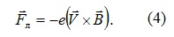

-
Eлектромагнитната индукция е явление, което най-ясно демонстрира връзката “електрично-магнитно” поле, а именно - изменението на потока на магнитното поле през една повърхност предизвиква появата на електричен ток в контура, който я огражда. Този ток се нарича индуциран, а възникналото напрежение в контура e индуцирано електродвижещо напрежение (ЕДН).
-
1. Закон на Фарадей
Английският физик Майкъл Фарадей през 1831 г. провежда експерименти, с които доказва индуцирането на ток в електрични вериги, намиращи се в променливи магнитни полета. Например приближаването на магнит към навивките на проводник (фиг. 1 а) води до поява на индуциран електричен ток в проводника. Ако навивките се движат към магнита се получава същия резултат. При това индуцираният ток има една и съща посока в двата случая, а големината му зависи от скоростта на придвижване на магнита и навивките едни към други. При промяна на посоката на относително движение се променя посоката на индуцирания ток. Замяната на постоянния магнит от електромагнит с постоянен електричен ток (фиг. 1 б) не променя резултата от описаните по-горе експерименти.
Индуциран електричен ток се появява и при експеримента, представен схематично на фиг. 1 в. При затваряне на ключа К на батерията във втората верига протича електричен ток независимо, че проводниците са в покой. Индуциран ток възниква и при изключване на ключа, но посоката му е противоположна на индуцирания ток при включване.
Законът на Фарадей за електромагнитната индукция гласи, че големината на индуцираното електродвижещо напрежение ℰi в токов контур е пропорционално на скоростта на изменение на потока на магнитната индукция ФВ през повърхността, ограничена от него -
Видео
-
2. Правило на Ленц
Правилото на Ленц обяснява знака “минус” в закона на Фарадей. То гласи, че индуцираният електричен ток в даден контур се противопоставя на изменението на магнитния поток през контура (фиг. 2). Посоката му е такава, че създаденото от него собствено магнитно поле B се противопоставя на нарастването или намалението на магнитния поток, създаден от магнитното поле B . Когато магнитът се движи към проводящия контур, изменящият се магнитен поток индуцира електричен ток, чието магнитно поле има противоположна посока на полето на магнита (фиг. 2 а). Ако магнитът се отдалечава от токовия контур (фиг. 2 б) индуцираният ток създава магнитно поле, което има посоката на първичното поле и възникващата сила на привличане се противопоставя на отдалечаването на магнита.
-
3. Електромагнитна индукция в проводник, движещ се в магнитно поле
На фиг. 3 е показан проводник с формата на правоъгълна рамка, който се движи с постоянна скорост V в еднородно магнитно поле с индукция B . Ако само част от контура е в магнитното поле, магнитният поток през него намалява и изменението му за време dt, е
Индуцираното ЕДН при движение на проводник в магнитно поле се дължи на силата на Лоренц. Доказателството се извършва по следния начин. Разглежда се участъка AB. Скоростта на електроните от проводника V е сума от скоростта v на контура и скоростта u на движение на зарядите в самия проводник V = v+u (фиг. 4). Върху всеки заряд действа силата на Лоренц

-
Перпендикулярната съставяща FA определя силата на Ампер, с която магнитното поле действа върху проводника (фиг. 5). При равномерно движение на проводника силата на Ампер уравновесява външната сила F , която го привежда в движение, а успоредната съставяща на силата на Лоренц по дължината на проводника F ст е странична сила, която принуждава зарядите да се движат насочено в проводника, т.е. тя е силата, създаваща индукционния ток.
-
Работата на лоренцовата сила е нула, тъй като тя е перпендикулярна на скоростта на зарядите V. Това означава, че сумата от работата на силата на Ампер Аа и на страничната сила Аст е нула
-
4. Електромагнитна индукция в неподвижни проводници
Възникването на електродвижещо напрежение в неподвижни проводници, които се намират в променливо магнитно поле не може да бъде обяснено с действието на лоренцова сила върху зарядите от проводника, тъй като магнитното поле не влияе върху неподвижни електрични заряди.
Появата на индуцирано електродвижещо напрежение ℰi и индуциран електричен ток в даден контур е обяснено от Максуел. При изменение на потока на магнитната индукция през повърхността, ограничена от даден токов контур L, в последния се индуцира вихрово електрично поле E*, чиято циркулация e равна на индуцираното ЕДН -
Електричното поле E* е непотенциално и не се различава от електростатичното поле по действието си върху електрични заряди. Разликата е в това, че индуцираното електрично поле няма източници, докато електростатичното поле има източници – електричните заряди. Линиите на интензитета на електростатичното поле започват и завършват върху електрични заряди или в безкрайност, а тези на индуцираното електрично поле са затворени и обхващат изменящото се магнитно поле. Схематично двете полета, електричното и създаващото го магнитно поле, са представени на фиг. 6.
-
Наименованието магнитна индукция е свързано с това, че магнитното поле чрез своите изменения индуцира вихрово електрично поле. Циркулацията на вихровото електрично поле по затворен контур не е нула, за разлика от циркулацията на електростатичното поле, защото при движение на заредена частица по силовите линии на вихровото поле, електричната сила е насочена винаги по посока на движението или под ъгъл 180о спрямо нея. Полетата с такава структура се наричат соленоидални.
Вихровото електрично поле съществува независимо дали в дадената област на пространството има токов контур или не. Токовият контур е само индикатор на индуцираното поле.
Изменението на магнитния поток в неподвижен проводник може да се предизвика, както чрез движение на източника на магнитното поле, така и чрез изменение на големината на електричния ток, създаващ магнитното поле. Първият вариант се реализира в промишлените генератори, където въртящ се електромагнит възбужда ток в навивките на неподвижен статор, а вторият вариант - при трансформаторите. -
Видео
-
5. Вихрови токове
При поставяне на масивни метални проводници в променливо магнитно поле, в обема им се индуцират вихрови токове на свободните електрони, които протичат по затворени контури вътре в проводниците (фиг. 4.18). Вихровите токове се индуцират и когато масивните проводници се движат в постоянно магнитно поле. Големината на индуцирания вихров ток се определя по закона
където R е електричното съпротивление на проводника, а dФВ/dt изразява скоростта на изменение на магнитния поток.
Вихровите токове достигат високи стойности, защото масивните проводници имат ниско електрично съпротивление. Те са в състояние да предизвикат разтопяването им, което се използва в метода на индукционно нагряване в металургичните пещи за получаване на сплави от различни метали.
Вихровите токове създават собствено магнитно поле, което в движещите се проводници взаимодейства с първичното поле със сили, които съгласно правилото на Ленц се противопоставят на движението. Този ефект се използва за бързо спиране на трептенията в стрелковите измерителни прибори.
За намаление на вихровите токове, когато те водят до нежелано нагряване и загуби на енергия, например в генераторите и трансформаторите, същите се изработват от отделни тънки пластини, с което се увеличава общото им съпротивление, а изолирането помежду им прекъсва възможните токопроводящи пътища. Използването на магнитни материали с високо електрично съпротивление е също начин за избягване на нежеланите вихрови токове в тях. -
Видео
-
© ROGACHEV